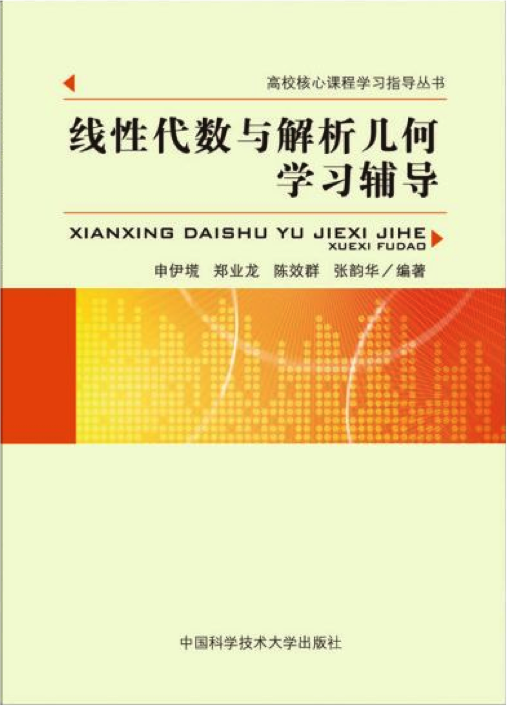

- 申伊塃、郑业龙、陈效群、张韵华编著
- 中国科学技术大学出版社
- 欢迎将您的修改建议通知我们 (电子邮箱: yhshen AT ustc.edu.cn)
|

|
感谢MathJax对在网页上显示数学公式的支持.
部分勘误信息 (2018年6月第3次印刷)
非常感谢王成凯、陈力、王圣朴、张润卿、曾郅琛、柴琎、秦健等同学提供的宝贵意见.
-
第107页最下面, 应改成: 设$\gamma_i=k_i\gamma_1$, 并令$a_i=k_ia_1$, $i=2,3,\cdots,n$, 则
$$
A=\color{red}{
\begin{pmatrix}
\gamma_1 \\ k_2\gamma_1 \\ \vdots \\ k_n\gamma_1
\end{pmatrix}
=}
\begin{pmatrix}
a_1b_1 & a_1b_2 & \cdots & a_1b_n \\
a_2b_1 & a_2b_2 & \cdots & a_2b_n \\
\vdots &\vdots &\ddots &\vdots \\
a_nb_1 & a_nb_2 & \cdots & a_nb_n
\end{pmatrix}
=\cdots
$$
-
第113页的第20题改为: 设实矩阵$A=(a_{ij})_{3\times 3}$满足$A^*=A^{\mathrm{T}}$, 其中 $A^*$为$A$的伴随矩阵, $A^{\mathrm{T}}$为$A$的转置矩阵, 若$a_{11}$, $a_{12}$, $a_{13}$ 为三个相等的正数, 则...
-
第113页的第24题改为: $B^{\color{red}{2012}}-2A^2$
-
第115页的第20题的解答中: 由条件$A^*=A^{\mathrm{T}}$知$A^*A=A^{\mathrm{T}}A$, 即$\det(A)I_3=A^{\mathrm{T}}A$. 对后者取行列式, 知 $\det(A)^3=\det(A)^2$, 从而 $\det(A)=0$ 或 $1$. 若 $\det(A)=0$, 则由$\tr(A^{\mathrm{T}}A)=\tr(\det(A)I_3)$知$\sum_{i=1}^{3}\sum_{j=1}^3 a_{ij}^2=0$, 从而 $A$ 为零矩阵. 但是这与 $a_{11}=a_{12}=a_{13}$为正数的条件相矛盾. 故$\det(A)=1$, 此时 $A^{\mathrm{T}}A=I_3$, 这说明 $A$ 为第一型的正交矩阵; 特别地, $A$ 的第一个行向量是长度为$1$的向量. 再由 $a_{11}=a_{12}=a_{13}>0$, 知 $a_{11}=a_{12}=a_{13}=1/\sqrt{3}$. 故答案为 (A).
-
第115页的第23题的解答中: 当 $a=3$ 时, 增广矩阵
\[
\bar{A}=
\begin{pmatrix}
1 & 2 & 1 & 1\\
2 & 3 & 5 & 3\\
1 & 3 & -2 & 2
\end{pmatrix}
\longrightarrow
\begin{pmatrix}
1 & 2 & 1 & 1\\
0 & 1 & -3 & -1\\
0 & 0 & 0 & 1
\end{pmatrix},
\]
而当 $a=-1$时, 增广矩阵
\[
\bar{A}=
\begin{pmatrix}
1 & 2 & 1 & 1\\
2 & 3 & 1 & 3\\
1 & -1 & -2 & 2
\end{pmatrix}
\longrightarrow
\begin{pmatrix}
1 & 2 & 1 & 1\\
0 & 1 & 1 & -1\\
0 & 0 & 0 & 1
\end{pmatrix}.
\]
无论是哪种情形, $\mathrm{r}(A)=2 < \mathrm{r}(\bar{A})=3$, 因此方程组无解 (这儿需要用到第五章的知识点, 参见教材 5.5.1 小节的内容). 故此题的答案是 $a=3$ 或 $-1$.
-
第 115 页到 120 页的 15 是教材 (第二版) 的 16;
16 是教材的 17;
17 是教材的 19;
18 是教材的 19;
19 需要删去;
21 是教材的 34;
22 是教材的 35;
23 是教材的 15;
24 是教材的 21;
25 是教材的 23;
26 是教材的 24;
27 是教材的 25;
28 是教材的 26;
29 是教材的 27;
30 是教材的 28;
31 是教材的 29;
32 是教材的 30;
33 是教材的 31;
34 是教材的 32;
35 是教材的 36;
36 是教材的 37;
37 是教材的 38;
38 是教材的 39;
39 是教材的 40;
40 是教材的 41;
41 是教材的 42;
42 是教材的 43.
-
第134页第30题第5行中改为: $i:={\color{red}\max}\{k\mid \text{向量组$a_1,a_2,\dots,a_k$}$线性相关$\} > 1$. 第6行中改为: 由 $i$ 的选取的极${\color{red}\text{小}}$性.
-
第147页第48题(5)中改为: $\frac{x_3-3x_{\color{red}{1}}}{4}$
-
第152页第62题(3)中改为: $\prod_{j\ne \color{red}{0}}(x-a_j),\prod_{j\ne \color{red}{1}}(x-a_j),\cdots,\prod_{j\ne n}(x-a_j) $ (其中 $a_0,a_1,\cdots,a_n $为互不相同的实数).
-
第181页例题6.2的第(4)小题: 设$V$是数域$F$上的一个有限维线性空间, 维数为$n\ge 1$, 则$\ldots$
-
第203页例题6.46的第(1)小题的答案为$-\tr(A)$
-
第203页例题6.46的第(12)小题的答案为任意实数
-
第 225 页第 7 题删除, 接下来的各题的题号均减一.
-
第254页例题7.53题目修正为: 设$\alpha_1,\alpha_2,\dots,\alpha_n$和$\beta_1,\beta_2,\dots,\beta_n$为$n$维欧氏空间$V$的两组正交基.
-
第294页例题8.12的证明修正为: 设$Q$的正负惯性指数分别为$s,t$, 并经可逆线性变换$X=CZ$化为规范形$Q(x_1,x_2,\dots,x_n)=z_1^2+z_2^2+\cdots+z_s^2-z_{s+1}^2-z_{s+2}^2-\cdots-z_{s+t}^2$. 不妨设 $C^{-1}=(c_{ij})$. 假设$s>p$, 则因为$p+(n-s) < n$, 故存在非零的$X_0$使$y_i=0$, $i=1,2,\dots,p$; $z_j=c_{j1}x_1+c_{j2}x_2+\cdots+c_{jn}x_n=0$, $s+1\le j\le n$. 此时, 一方面, $Q(X_0)=-y_{p+1}^2-y_{p+2}^2-\cdots-y_{p+q}^2\le 0$. 另一方面, $Z_0=C^{-1}X_0$ 不是零向量, 从而相应的 $z_1,z_2,\dots,z_s$ 不全为$0$. 此时, $Q(X_0)=z_1^2+z_2^2+\cdots+z_s^2>0$. 矛盾, 从而$s\le p$. 同理可证$t\le q$.
-
第 305 页 2.(5) 中关于半正定的等价条件的第 ③ 条移去“正惯性指数$s=\mathrm{rank}(A) < n$, 且”; 第 ④ 条移去 “, $s< n$”; 第 ⑤ 条移去“不可逆”; 第 ⑥ 条移去“, 且至少有一个为0”.
-
第 305 页 2.(6) 中移去“; $\det(A)=0$,”.
-
第 305 页 3.(2) 改为 “半正定的判定. $n$ 元实二次型$Q(X)=X^{\mathrm{T}}AX$ 或实对称矩阵 $A$ 半正定 $\Leftrightarrow$ $A$ 的各阶主子式全非负, 即 $\det A\binom{i_1\ i_2\ \cdots\ i_k}{i_1\ i_2\ \cdots\ i_k}\ge 0$, $1\le i_1 < i_2 < \cdots < i_k\le n$, $k=1,2,\dots,n$.”
-
第 305 页 3.(4) 改为 “半负定的判定. $n$ 元实二次型$Q(X)=X^{\mathrm{T}}AX$ 或实对称矩阵 $A$ 半负定 $\Leftrightarrow$ $A$ 的各奇数阶主子式全非正, 各偶数阶主子式全非负, 即 $(-1)^k\det A\binom{i_1\ i_2\ \cdots\ i_k}{i_1\ i_2\ \cdots\ i_k}\ge 0$, $1\le i_1 < i_2 < \cdots < i_k\le n$, $k=1,2,\dots,n$.”
-
第 316 页 7(5) 的答案应该为 $(a_1b_1+\cdots+{\color{red}{a_n}}b_n)^{k-1}A$
-
第 316 页到 318 页的 15 是教材 (第二版) 的 16;
16 是教材的 17;
17 是教材的 19;
18 是教材的 19;
19 需要删去;
21 是教材的 34;
22 是教材的 35;
23 是教材的 15;
24 是教材的 21;
25 是教材的 23;
26 是教材的 24;
27 是教材的 25;
28 是教材的 26;
29 是教材的 27;
30 是教材的 28;
31 是教材的 29;
32 是教材的 30;
33 是教材的 31;
34 是教材的 32;
35 是教材的 36;
36 是教材的 37;
37 是教材的 38;
38 是教材的 39;
39 是教材的 40;
40 是教材的 41;
41 是教材的 42;
42 是教材的 43.
-
第 326 页第 7 的答案删除, 接下来的各题的题号均减一.
部分勘误信息 (2016年8月第2次印刷) (请参考上面的勘误, 这一版次的勘误一般情况下不再更新)
非常感谢熊伟、李天宇、吴昕、程泽康、张钊、康宁等同学提供的宝贵意见.
-
第42页的例题2.31, 直线 $L$ 的表达式改为
$$
\begin{cases}
x\color{red}{+}y-z-1=& 0 \\
x-y+z+1=&0
\end{cases}
$$
-
第76页, 最后一行的矩阵改为
$$
\begin{pmatrix}
I_r & 0 & A^{-1} & -A^{-1}CB^{-1}\\
0 & I_{\color{red}{k}} & 0 & B^{-1}
\end{pmatrix}.
$$
-
第92页例4.37的解答:
$$
A^n=2^{n-1}\alpha \alpha^{\mathrm{T}} =2^{n-1}
\begin{pmatrix}
1 & 0 & -1 \\
0 & 0 & 0 \\
\color{red}{-1} & 0 & 1
\end{pmatrix} =
\begin{pmatrix}
2^{n-1} & 0 & -2^{n-1}\\
0 & 0 & 0 \\
\color{red}{-2^{n-1}} & 0 & 2^{n-1}
\end{pmatrix}
$$
-
第93页例4.38的解答. 矩阵的圆括号应当改成行列式符号:
$$
|A|=\left|
\begin{matrix}
n-1 & 1 & \ldots & 1 & 1 \\
n-1 & 0 & \ldots & 1 & 1 \\
\vdots & \vdots & \ddots & \vdots & \vdots \\
n-1 & 1 & \ldots & 0 & 1 \\
n-1 & 1 & \ldots & 1 & 0
\end{matrix}
\right|
=(n-1)
\left|
\begin{matrix}
1 & 1 & \ldots & 1 & 1 \\
1 & 0 & \ldots & 1 & 1 \\
\vdots & \vdots & \ddots & \vdots & \vdots \\
1 & 1 & \ldots & 0 & 1 \\
1 & 1 & \ldots & 1 & 0 \\
\end{matrix}
\right|
=(n-1)
\left|
\begin{matrix}
1 & 1 & \ldots & 1 & 1 \\
0 & -1 & \ldots & 0 & 0 \\
\vdots & \vdots & \ddots & \vdots & \vdots \\
0 & 0 & \ldots & -1 & 0 \\
0 & 0 & \ldots & 0 & -1 \\
\end{matrix}
\right|=(-1)^{n-1}(n-1).
$$
-
第101页例4.47的题目. 证明Cramer法则: 当系数矩阵……
-
第112页, 第17题的四个选项将 $AB$ 全都改成 $A^{{\mathrm{T}}}B$.
-
第218页例6.93的提示中, 对于代数重数, 很显然有 $\color{red}{n_{A,B}=n_A+n_B}$.
-
第304页2.(2)中, $\color{red}{(A)_{ij}>0}$ 改成 $(A)_{ii}>0$, 即 $A$ 的主对角线上的元素皆大于零.
-
第313页, 24题的答案应改为 $4x^2+4y^2\color{red}{\le}1$.
-
第313页, 27题的方程应改为
$$
8x^2+5y^2+5z^2+4xy+8yz-4xz-8x-2y+2z-\color{red}{7}=0.
$$
-
第317页25题(4)的答案: $\color{red}{(-1)^{\sum_{i < j} n_in_j}}\det(A_1)\cdots\det(A_k)$
-
第321页, 12题, (2): 错误. 例如, 考虑平面上 $(1,0)$, $(0,1)$ 和 $(1,1)$ 构成的向量组.
-
第323页, 35题, (2): 矩阵应改为
$$
\begin{pmatrix}
3/5 & \color{red}{-2/5} & 0 & 0 \\
-2/5 & 3/5 & 0 & 0 \\
3/5 & -2/5 & 1 & 0 \\
-14/5 & 11/5 & 0 & 1
\end{pmatrix}.
$$
-
第325页2题(4)的答案: 所求矩阵为 $
\begin{pmatrix}
0 & \color{red}{-x_{21}} & x_{12} & 0\\
-x_{12} & x_{11}-x_{22} & 0 & x_{12}\\
x_{21} & 0 & x_{22}-x_{11} & -x_{21} \\
0 & x_{21} & -x_{12} & 0
\end{pmatrix}
$.
-
第330页4题(2)的答案:
$\frac{1}{\sqrt{7}}(1,1,1,2)$, $\frac{1}{9\sqrt{21}}(4,4,-38,15)$, $\frac{1}{9\sqrt{26898}}(986,743,-133,-798)$.
{kind=link}